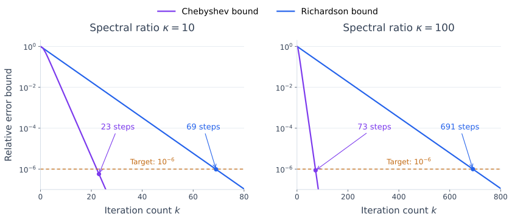

The Chebyshev Iteration Method#
A stationary iteration applies the same correction rule repeatedly. Chebyshev iteration chooses changing coefficients so that different error components are reduced together. Its coefficients depend on bounds for the eigenvalues, rather than on inner products computed during the iteration.
The main idea is to view the error after several steps as a polynomial of the matrix applied to the initial error. Choosing that polynomial well can be much more effective than repeating one fixed step.
From Splitting Methods to Richardson Iteration#
For \(Ax=b\), let \(x\) denote the exact solution and \(x^{(k)}\) the current approximation. The splitting methods choose a nonsingular matrix \(M\) whose systems are inexpensive to solve. They use a decomposition \(A=M-N\) and the update \(Mx^{(k+1)}=Nx^{(k)}+b\). Writing \(N=M-A\) gives the residual correction form:
Here \(r^{(k)}=b-Ax^{(k)}\) is the residual. Each step solves with \(M\) to turn this residual into a correction. Jacobi uses \(M=D\), while Gauss-Seidel uses \(M=D-L\), with the convention \(A=D-L-U\) from the preceding sections.
Call the correction \(z^{(k)}\). We can adjust how much of it we take:
Setting \(\tau_k=1\) recovers the original splitting method. This scaled correction is called preconditioned Richardson iteration: solving with \(M\) is the preconditioning step. Choosing \(M=I\) gives Richardson iteration, where the correction is the residual itself. The step length \(\tau_k\) controls how much of the correction we add.
Here the scaling applies to the correction of the whole vector. Even with \(M=D-L\), it is generally different from SOR, which relaxes each component before computing the next one.
Chebyshev acceleration chooses changing coefficients using spectral bounds to reduce the error more effectively. To explain the polynomial construction first, we take \(M=I\). We return to preconditioning after deriving the method and its convergence bound.
From Residual Corrections to Polynomials#
For the analysis, assume \(A\) is real symmetric positive definite (SPD). Its eigenvalues are therefore real and positive. Suppose we know bounds
These are enclosing bounds; they need not be the exact extreme eigenvalues.
Starting from \(x^{(0)}\), we correct the current approximation by adding a multiple of its residual:
With a fixed step length, this iteration is stationary. Allowing \(\tau_k\) to vary gives a nonstationary iteration.
Use the error convention \(e^{(k)}=x^{(k)}-x\) from the preceding sections. Since \(b=Ax\),
After \(k\) steps,
Thus \(p\) has degree at most \(k\) and satisfies \(p(0)=1\). We call it the error polynomial, since it describes how the iteration changes the initial error. A root of \(p\) at \(\theta\) corresponds to a step length \(1/\theta\).
In the eigenvalue chapter, a polynomial filter preserved a wanted eigenvector component. Here we want every eigenvector component of the error to shrink. The normalization at zero comes from the correction formula, and zero lies outside the positive eigenvalue interval.
Choosing an Error Polynomial#
Because \(A\) is symmetric, its eigenvectors form an orthonormal basis. In this basis, \(p(A)\) multiplies error component \(j\) by \(p(\lambda_j)\). Consequently,
We therefore seek a polynomial of degree at most \(k\), normalized by \(p(0)=1\), that makes the last maximum as small as possible.
This is a minimax problem: minimize the largest magnitude over the interval. It gives a worst-case guarantee using only the spectral bounds. A polynomial tailored to the particular eigenvalues or initial error can do better for that particular problem. We write \(p\) for a general admissible polynomial and \(p_k\) for the optimal polynomial of degree \(k\) constructed below.
The Chebyshev Minimax Polynomial#
Write \(C_k\) for the Chebyshev polynomial of the first kind, using the same notation as in the Lanczos analysis. Recall that
In particular, \(C_0(z)=1\) and \(C_1(z)=z\).
Although defined using cosine, \(C_k\) is a polynomial in \(z\). The identity \(\cos((k+1)t)=2\cos t\cos(kt)-\cos((k-1)t)\) gives
Starting from \(C_0=1\) and \(C_1=z\), this recurrence constructs a polynomial of degree \(k\) at each step. For example, \(C_2(z)=2z^2-1\) and \(C_3(z)=4z^3-3z\). These polynomials are defined for all real \(z\), including values outside \([-1,1]\).
Define the center and half-width of the spectral interval:
The map \(z=(c-\lambda)/d\) sends \([\alpha,\beta]\) to \([-1,1]\), while \(\lambda=0\) maps to \(c/d>1\). This suggests using \(C_k\) on the mapped interval and dividing by its value at zero.
For \(z>1\), the starting values \(C_0=1\) and \(C_1=z\) satisfy \(C_1>C_0>0\). The recurrence then gives \(C_{k+1}>C_k>0\) by induction. In particular, the denominator \(C_k(c/d)\) is positive.
Theorem 46 (Chebyshev Interval Minimax Property)
For \(0<\alpha<\beta\) and \(k\ge0\), the polynomial
minimizes the maximum magnitude on \([\alpha,\beta]\) among real polynomials of degree at most \(k\) satisfying \(p(0)=1\). The minimum value is
Proof. The proof uses a simple fact: a nonzero polynomial of degree at most \(k\) cannot have more than \(k\) distinct roots. A better polynomial would force too many crossings of the Chebyshev polynomial.
For \(k\ge1\), consider the \(k+1\) points
They run in increasing order from \(t_0=\alpha\) to \(t_k=\beta\). At these points,
Suppose another polynomial \(p\), of degree at most \(k\) with \(p(0)=1\), had strictly smaller maximum magnitude. Then
At an even index, \(p_k(t_j)\) equals the upper bound, so \(p(t_j)-p_k(t_j)<0\). At an odd index, \(p_k(t_j)\) equals the lower bound, so \(p(t_j)-p_k(t_j)>0\). Thus the difference \(p-p_k\) changes sign between every consecutive pair of points.
Since polynomials are continuous, the intermediate value theorem gives at least one zero of \(p-p_k\) in each of the \(k\) disjoint intervals \((t_j,t_{j+1})\). There is also a zero at the origin because \(p(0)-p_k(0)=1-1=0\). This additional zero lies outside \([\alpha,\beta]\), since \(\alpha>0\).
We have therefore found at least \(k+1\) distinct zeros of \(p-p_k\). But this difference is a polynomial of degree at most \(k\) and is nonzero, as its strict signs at the \(t_j\) show. This is impossible. Hence no admissible polynomial has a smaller maximum magnitude. The case \(k=0\) is immediate.
The alternating extrema explain the result: the polynomial balances its largest amplification across the interval. The normalization is essential; without a constraint, the zero polynomial would trivially minimize the maximum. A general interval version is given in Saad, Theorem 4.8.
The Convergence Bound#
The minimax property gives a uniform error bound. It does not assert equality with the actual error, which depends on the starting vector and the eigenvalues present.
Theorem 47 (Chebyshev Convergence Bound)
Let \(A\) be SPD with spectrum in \([\alpha,\beta]\), where \(0<\alpha<\beta\). Suppose the iterates satisfy \(e^{(k)}=p_k(A)e^{(0)}\) for the normalized Chebyshev polynomials above. Put
Then, in exact arithmetic,
The same inequalities hold in the energy norm \(\|e\|_A=\sqrt{e^TAe}\).
Proof. In the orthonormal eigenvector basis, each error coefficient is multiplied by \(p_k(\lambda_j)\). This gives the factor \(1/C_k(c/d)\) in either norm; the energy norm simply weights the squared coefficients by the positive eigenvalues.
To evaluate this factor, we use the following standard formula for Chebyshev polynomials, stated without proof: for \(z>1\),
In our case, \(z=c/d=(\kappa+1)/(\kappa-1)\). Substitution gives
The formula therefore yields
Taking the reciprocal gives the required error factor:
Here \(\kappa\) is the ratio of the chosen bounds. It equals the 2-norm condition number \(\kappa_2(A)\) when the bounds are the exact extreme eigenvalues. The scalar \(q\), which lies between zero and one, is the geometric convergence factor; a smaller \(q\) gives a faster error reduction.
For comparison, a constant Richardson step gives the error polynomial \((1-\tau\lambda)^k\). The largest value of \(|1-\tau\lambda|\) on the interval occurs at an endpoint. The best step balances the two endpoint values with opposite signs:
Its interval error bound therefore has factor
For the interval \([1,9]\), this factor is \((4/5)^k\), whereas the Chebyshev bound is at most \(2(1/2)^k\).
To reduce the error to \(\|e^{(k)}\|_2\le\epsilon\|e^{(0)}\|_2\), where \(0<\epsilon<1\), it suffices to take
For large \(\kappa\), this estimate grows like \(\sqrt{\kappa}\log(1/\epsilon)\), compared with \(\kappa\log(1/\epsilon)\) for Richardson iteration with its best constant step length.
The practical difference is how much harder the iteration becomes as \(\kappa\) grows. For a fixed accuracy, increasing a large \(\kappa\) by a factor of \(100\) multiplies the predicted Chebyshev iteration count by about \(10\), but the Richardson count by about \(100\). Chebyshev therefore becomes increasingly attractive as the eigenvalue interval becomes more spread out. Each method uses one matrix-vector product per step, so fewer steps can mean substantially less work. These are worst-case predictions from the interval bounds; actual iteration counts can be smaller.
The plot compares the exact interval bounds for both methods. The vertical axis is logarithmic: a decrease from \(10^{-2}\) to \(10^{-3}\), for example, means a tenfold reduction in the error bound.


Fig. 23 Predicted convergence for spectral ratios \(\kappa=10\) (left) and \(\kappa=100\) (right). The curves bound \(\|e^{(k)}\|_2/\|e^{(0)}\|_2\) using the same eigenvalue interval for both methods. Markers show the first step at which each bound reaches the target \(10^{-6}\). Chebyshev reaches the target much sooner, and the advantage grows with \(\kappa\). These are theoretical bounds, not measured errors for a particular system. Note the different horizontal scales.#
From the Polynomial to an Iteration#
The preceding theorem tells us which error polynomial to use. We still need an update for \(x^{(k)}\) that produces it. There are two ways to do this. The first-order method uses only the current iterate and factors a polynomial of a chosen degree. The second-order method, developed in the optional section at the end of this page, uses the two most recent iterates to produce the optimal polynomial at every step without fixing the final degree in advance.
First-Order Chebyshev Iteration: Factoring a Polynomial#
Fix a final degree \(m\ge1\). The roots of \(p_m\) and the corresponding step lengths are
The superscript records the chosen final degree: changing \(m\) changes the whole sequence of step lengths. To see why these steps produce the desired polynomial, write
Both sides have the same \(m\) roots and equal \(1\) at zero, so they are the same polynomial. Each Richardson step supplies one factor. After all \(m\) steps, we therefore have \(e^{(m)}=p_m(A)e^{(0)}\) in exact arithmetic. The intermediate products generally differ from the optimal polynomials of their respective degrees.
Factor ordering therefore matters in floating-point arithmetic. Although the final product is independent of the ordering in exact arithmetic, unfavorable orderings can produce large intermediate vectors and amplify rounding errors. Golub’s lecture notes discuss this issue.
Choosing Eigenvalue Bounds#
Safe enclosing bounds give the stated guarantee. Taking a smaller positive lower bound or a larger upper bound is safe, but increases the interval ratio and weakens the convergence estimate. Exact extreme eigenvalues are not required.
If the interval misses an eigenvalue, the stated error bound no longer applies. In particular, underestimating the upper bound can cause divergence.
Gershgorin estimates can provide an upper bound; a useful positive lower bound may be harder to obtain. A few Lanczos steps can suggest estimates, but the extreme Ritz values lie inside the extreme eigenvalues: the smallest Ritz value is an upper bound for the smallest eigenvalue, and the largest is a lower bound for the largest eigenvalue. They are not, by themselves, certified enclosing bounds.
Preconditioning and Scope of the Theory#
We now return to the correction \(z^{(k)}\) introduced with the splitting methods. Assume that both \(A\) and the preconditioner \(M\) are SPD, and solve
Use \(z^{(k)}\) in place of \(r^{(k)}\) when forming solution corrections. Choosing \(M=D\) gives the diagonally preconditioned version associated with Jacobi.
The coefficients must now use bounds \([\alpha,\beta]\) for the eigenvalues of \(M^{-1}A\), rather than those of \(A\). The aim is to make this interval narrower relative to its lower endpoint, giving a smaller ratio \(\beta/\alpha\) and faster convergence. For SPD \(M\), the same convergence factor holds in the energy norm \(\|e\|_A\).
The SPD assumption on \(M\) matters. Diagonal preconditioning and the SSOR preconditioner described earlier fit this theory. The Gauss-Seidel splitting matrix \(D-L\) is generally nonsymmetric, so this guarantee does not automatically apply to that choice.
Why the Preconditioned Bound Holds (Optional)#
This change-of-variables argument justifies the preceding claim. It can be skipped on a first reading.
Although \(M^{-1}A\) is generally nonsymmetric, it is similar to the SPD matrix
Here \(M^{1/2}\) is the symmetric positive definite square root of \(M\), and \(M^{-1/2}\) is its inverse. Define the transformed error by \(\widetilde e=M^{1/2}e\). The polynomial error relation becomes
The SPD convergence theorem applies to \(B\). To translate its bounds back, observe that
Thus the bounds hold in both \(\|e\|_M=\sqrt{e^TMe}\) and \(\|e\|_A\).
Scope of the SPD Theory#
For symmetric negative definite \(A\), multiplying \(A\) and \(b\) by \(-1\) reduces the problem to the SPD case. For a general nonsymmetric matrix, eigenvalue locations alone do not give the same 2-norm guarantee; eigenvector conditioning can enter, as in the Arnoldi analysis. Extensions to complex spectral regions or separated real intervals require additional polynomial approximation theory. The SPD interval analysis above does not establish their convergence rates.
Practical Role and Connection to CG#
Each unpreconditioned step needs one matrix-vector product and a few vector updates. Preconditioning adds a solve with \(M\). Only a fixed number of vectors is stored.
The forthcoming conjugate gradient (CG) method chooses its polynomial using information from the current iterates. As we will show in the next chapter, for SPD systems in exact arithmetic, CG has no larger energy-norm error than Chebyshev after the same number of steps, using the same initial guess and preconditioner. It also avoids requiring external spectral bounds. Chebyshev remains useful when bounds are available and predictable work or reduced synchronization is valuable, including as a preconditioner or a multigrid smoother. The implementation below shows why it needs no inner products to compute its updates.
Python Implementation#
The code implements the second-order Chebyshev recurrence for a real SPD matrix with eigenvalues in \([\alpha,\beta]\). Its derivation is given in the optional section below; the implementation and example can be used without following that derivation.
As above, c and d are the center and half-width of the interval. The scalar tau weights the residual, while mu weights the previous correction. The code stores that correction instead of the previous solution vector: after \(k\ge1\) updates, correction is \(x^{(k)}-x^{(k-1)}\).
Important
The iteration uses no inner products. Each update needs one matrix-vector product, scalar coefficient calculations, and vector additions and scalings. The coefficients depend only on the eigenvalue bounds.
In contrast, CG uses inner products of its current vectors to choose its coefficients. On a parallel machine, these inner products require combining contributions from different processors, an operation called a reduction. Chebyshev avoids those reductions, although its matrix-vector products can still require communication. Netlib’s comparison discusses this advantage.
import numpy as np
def chebyshev(A, b, alpha, beta, steps, x0=None):
"""Take `steps` second-order Chebyshev updates, without inner products.
A is real SPD; 0 < alpha < beta enclose its eigenvalues.
"""
if not 0 < alpha < beta:
raise ValueError("Require 0 < alpha < beta.")
if not isinstance(steps, (int, np.integer)) or steps < 0:
raise ValueError("steps must be a nonnegative integer.")
b = np.asarray(b, dtype=float)
x = np.zeros_like(b) if x0 is None else np.array(x0, dtype=float, copy=True)
if steps == 0:
return x
c, d = (alpha + beta) / 2, (beta - alpha) / 2
correction = (b - A @ x) / c
x = x + correction # First update
for k in range(1, steps):
if k == 1:
tau = 1 / (c - d**2 / (2 * c)) # Special initialization
else:
tau = 1 / (c - (d**2 / 4) * tau)
mu = c * tau - 1
r = b - A @ x # Matrix-vector product
correction = tau * r + mu * correction # No dot products
x = x + correction
return x
Here steps determines when this demonstration stops; it does not enter the coefficient formulas. Choosing a larger value leaves the earlier iterates unchanged, unlike changing the final degree in the factored method.
For example, take a tridiagonal matrix with diagonal entries \(4\) and neighboring entries \(-1\). Each Gershgorin disc has center \(4\) and radius at most \(2\), so its real eigenvalues lie in \([2,6]\). We choose the right-hand side so that the exact solution is the vector of ones.
n = 50
A = (4 * np.eye(n)
- np.diag(np.ones(n - 1), 1)
- np.diag(np.ones(n - 1), -1))
b = A @ np.ones(n)
for steps in (0, 5, 10, 15, 20):
x = chebyshev(A, b, alpha=2.0, beta=6.0, steps=steps)
relative_residual = np.linalg.norm(b - A @ x) / np.linalg.norm(b)
print(f"steps = {steps:2d}, relative residual = {relative_residual:.1e}")
steps = 0, relative residual = 1.0e+00
steps = 5, relative residual = 2.5e-03
steps = 10, relative residual = 3.0e-06
steps = 15, relative residual = 3.4e-09
steps = 20, relative residual = 3.4e-12
The output reports the relative residual, which measures how well the equations are satisfied, rather than the error in the solution. These norm calculations are outside the iteration function. Computing a residual norm for stopping or monitoring requires a reduction over vector entries; the absence of inner products concerns the Chebyshev updates themselves. In practice, these checks can be made periodically rather than at every step.
Second-Order Chebyshev Iteration (Optional)#
Note
This derivation is optional. It explains the coefficients used in the implementation above. You can use that implementation and its convergence bound without following the algebra here.
The factored method targets one chosen final degree. To obtain the optimal polynomial at every degree instead, the second-order Chebyshev method uses both \(x^{(k)}\) and \(x^{(k-1)}\). Here “second-order” describes this dependence; it does not mean quadratic convergence.
For this derivation, take \(M=I\) and use the bounds for \(A\). The Chebyshev polynomials satisfy the recurrence
We use this recurrence to construct each normalized error polynomial from the previous two. Since \(p_1(\lambda)=1-\lambda/c\), the first solution update is
For \(k\ge1\), compute the residual \(r^{(k)}=b-Ax^{(k)}\) and use
Here \(\tau_k\) weights the residual correction, and \(\mu_k\) weights the preceding change in the approximation. These are coefficients of the two-step recurrence; \(\tau_k\) is not the root-based step length \(\tau_k^{(m)}\) of the factored method. Compute them from
The first update uses only \(x^{(0)}\). Then compute \(\tau_1\) and \(\mu_1\) to obtain \(x^{(2)}\); thereafter use the recurrence for \(\tau_k\). This initialization reflects the starting polynomials \(C_0=1\) and \(C_1=z\).
To see why the update produces the desired polynomials, substitute the formula for \(p_k\) into the Chebyshev recurrence. This gives
with
At \(\lambda=0\), the normalization \(p_j(0)=1\) gives \(c\tau_k-\mu_k=1\). Applying the polynomial recurrence to the initial error therefore gives
Using \(e^{(k)}=x^{(k)}-x\) and \(r^{(k)}=-Ae^{(k)}\) recovers the stated solution update.
Finally, the scalar recurrence avoids evaluating large Chebyshev values. For \(k\ge2\), the recurrence for \(C_k\) gives
For \(k=1\), substituting \(C_1(z)=z\) and \(C_2(z)=2z^2-1\) gives \(\tau_1=1/(c-d^2/(2c))\). This explains the separate initialization in the code.
Consequently, the convergence theorem applies at every step of this method. For the factored method, it applies at the chosen final step. In both cases, optimality concerns the interval bound, rather than the actual error for each system.
The short recurrence avoids choosing a root ordering, but finite-precision accuracy still depends on its implementation. For stopping, check an explicitly computed residual using the scaled residual criterion from Jacobi and Gauss-Seidel; the exact error is unknown. A detailed comparison of formulations and roundoff effects is given by Gutknecht and Röllin.